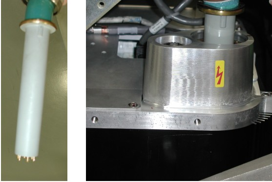

Operating Documentation
Direction 5307452-8EN, Rev# 4
Discovery CT750 HD Service Methods - Adv
Operating Documentation |
| Required Persons | Preliminary Reqs | Procedure | Finalization |
|---|---|---|---|
| 1 | Timing Not Applicable | 15 mins | Timing Not Applicable |
This document provides the necessary steps to seat the High Voltage cable in the High Voltage tank receptacle and safely secure the cable.
| Last Revised: | 16 September 2008 |
| Item | Qty | Effectivity | Part# | Manufacturer | |
|---|---|---|---|---|---|
| Spanner Wrench | 1 | - | - | - | |
| Item | Qty | Effectivity | Part# | Manufacturer |
|---|---|---|---|---|
| Transformer Oil | 1 gallon | - | T0552G (1 gallon), T0552F (5 gallon) or 2164148 (0.5 liter) | - |
| Dry Wipes | - | - | - | |
| Latex Gloves | - | - | - | |
| Ty-wraps™ | - | - | - |
| Condition | Reference | Eff |
|---|---|---|
Power to the system should be turned OFF. | - | - |
Gantry side, top, and front covers should be removed. | - | - |
Recommend procedure completion by trained personnel. | - | - |
Put approximately 20 mL (0.7 oz) of transformer oil in high voltage tank receptacle.
| NOTE: | Use only Mineral Based Transformer oil. Silicone based oil may damage the high voltage tank receptacle. |
With tube high-voltage cable connector key facing front of gantry, slowly insert tube high voltage cable, engaging connector pins, and seat cable in high voltage tank receptacle ( Illustration 1).
| NOTE: | Make sure to align cable connector key with tank receptacle slot. |
Illustration 1: High-Voltage Cable Connector Key

Overfill the high voltage tank receptacle.
| NOTE: | Oil should rise to the top of receptacle with a little bit pushing out as cable seats. If not, add more oil and retry until it does. |
By hand, tighten cable-locking ring.
Rotate cable strain relief for a clean cable dress.
Use spanner wrench to tighten cable-locking ring. Make sure that oil does not leak.
| INCORRECTLY SEALED AND SECURED HIGH VOLTAGE CABLE CAN RESULT IN DAMAGE TO THE HIGH VOLTAGE TANK, TUBE, OR OTHER PARTS OF THE GANTRY. | |
| DO NOT OVER-TIGHTEN THE CABLE-LOCKING RING. OVER-TIGHTENING CAN DEFORM THE CABLE PLUG SEALING SURFACES, BREAK THE OIL SEAL BETWEEN THE HIGH VOLTAGE TANK RECEPTACLE AND THE HOUSING, TWIST THE RECEPTACLE, AND DISRUPT INTERNAL WIRING. | |
| IF YOU GET OIL ON YOUR HANDS, WASH THEM. |
Carefully wipe up all excess oil.
Finish routing high voltage cable, using the hooks attached to high voltage inverter and bracket on top of the auxiliary box.
Use Ty-Wraps to secure cable to hooks.
Rotate tube to 6 o'clock position, then to 3 o'clock position. Check for oil leaks and carefully wipe up any excess oil.